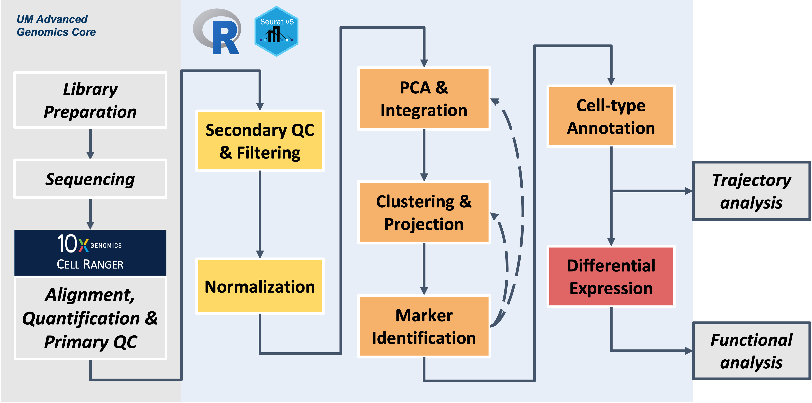

Build on the content and analysis steps covered in the workshop
sessions by working through these independent exercises. Note -
if you work on the exercises make sure to restart R session to clear out
environment before closing the window (like we have at the end of each
session) to avoid lags when logging in the next day
R and RStudio are designed to grab computer memory (RAM) when necessary and release that memory when it’s no longer needed. R does this with a fancy computer science technique called garbage collection.
The R garbage collector is very good for small objects and simple analyses, but complex single-cell analysis can overwhelm it. So don’t rely on R/RStudio’s built in garbage collection and session management for single-cell analysis. Instead, do the following:
saveRDS(). This gives you “savepoints” so if you need
to backtrack, you don’t have to go back to the beginning. This simple pattern will make your code more reproducible and your RStudio session more reliable.
You don’t need to have a fresh environment for these exercises. All variable names will be different from the lessons. Load the libraries (it’s okay if they’re already loaded) and the unfiltered Seurat object with the following code:
# =========================================================================
# Independent Exercise - Day 1 Startup
# =========================================================================
# After restarting our R session, load the required libraries & input data
library(Seurat)
library(BPCells)
library(tidyverse)
# Use provided copy of integrated data
exso = readRDS('./inputs/prepared_data/rdata/geo_so_unfiltered.rds')
# Add percent.mt column to meta.data
exso$percent.mt = PercentageFeatureSet(exso, pattern = '^mt-')
## NOTE - BEFORE STOPPING WORK ON THE EXERCISES REMEMBER TO POWER DOWN AND RESTART R SESSION !!!!Let’s practice filtering cells based on different criteria than we’re using in the lessons.
Subset exso so that all cells have
nFeature_RNA greater than or equal to 1000. How many cells
remain?
Hint 1: For a reminder of how to subset a Seurat object, see the “Removing low-quality cells” section of the Secondary QC and Filtering module. Hint 2: For a reminder, of how to count the number cells per sample, see the “Cell counts” section of the Secondary QC and Filtering module.
Subset exso so that all cells have
nCount_RNA greater than or equal to 5000. How many cells
remain?
Subset exso so that all cells have
percent.mt less than 10%. How many cells remain?
Subset exso so that each of the previous three
conditions are satisfied. How many cells remain?
# =========================================================================
# Independent Exercise - Day 1 Startup
# =========================================================================
# After restarting our R session, load the required libraries & input data
library(Seurat)
library(BPCells)
library(tidyverse)
# Load the unfiltered version and give it a new variable name
exso = readRDS('./inputs/prepared_data/rdata/geo_so_unfiltered.rds')
# Add percent.mt column to meta.data
exso$percent.mt = PercentageFeatureSet(exso, pattern = '^mt-')
## NOTE - BEFORE STOPPING WORK ON THE EXERCISES REMEMBER TO POWER DOWN AND RESTART R SESSION !!!!
# Exercise 1
exso = subset(exso, nFeature_RNA >= 1000)
ex1 = exso@meta.data %>% count(orig.ident, name = 'postfilter_cells')
ex1
# Exercise 2
exso = subset(exso, nCount_RNA >= 1000)
ex2 = exso@meta.data %>% count(orig.ident, name = 'postfilter_cells')
ex2
# Exercise 3
exso = subset(exso, percent.mt < 10)
ex3 = exso@meta.data %>% count(orig.ident, name = 'postfilter_cells')
ex3
# Exercise 4
exso = subset(exso, nFeature_RNA >= 1000 & nCount_RNA >= 1000 & percent.mt < 10)
ex4 = exso@meta.data %>% count(orig.ident, name = 'postfilter_cells')
ex4Since we are working with larger object sizes, it’s best to start with a fresh session. All variable names will be different from the lessons. Load the libraries (it’s okay if they’re already loaded) and the integrated Seurat object with the following code:
# =========================================================================
# Independent Exercise - Day 2 Startup
# =========================================================================
# After restarting our R session, load the required libraries & input data
library(Seurat)
library(BPCells)
library(tidyverse)
# Use provided copy of integrated data
exso2 = readRDS('inputs/prepared_data/rdata/geo_so_sct_integrated.rds')
exso2 # check that object loaded
## NOTE - BEFORE STOPPING WORK ON THE EXERCISES REMEMBER TO POWER DOWN AND RESTART R SESSION !!!!Test how the clustering results would change if you used fewer or more PCs when clustering these data.
# -------------------------------------------------------------------------
# Testing fewer PCs for clustering
# look at elbow plot to check PCs and consider alternatives to the number selected for main materials
ElbowPlot(exso2, ndims = 50, reduction = 'unintegrated.sct.pca')
# select alternative value to try (choose a number <10 or >10 PCs)
pcs = # Your value here #
# generate nearest neighbor (graph), using selected number of PCs
exso2 = FindNeighbors(exso2, dims = 1:pcs, reduction = 'integrated.sct.rpca')After generating clustering, set resolution parameter - remember this only impacts the how the boundaries of the neighbors are drawn, not the underlying NN graph/structure.
# -------------------------------------------------------------------------
# Testing resolution options to see impact
# start with one resolution
res = # Your value here #
# generate clusters, using `pcs` and `res` to make a custom cluster name that will be added to the metadata
exso2 = FindClusters(exso2, resolution = res,
cluster.name = paste0('int.sct.rpca.clusters', res))
# look at meta.data to see cluster labels
head(exso2@meta.data)
# run UMAP reduction to prepare for plotting
exso2 = RunUMAP(exso2, dims = 1:pcs,
reduction = 'integrated.sct.rpca',
reduction.name = paste0('umap.integrated.sct.rpca_alt', res))
# check object to see if named reduction was added
exso2Challenge 1: How could we generate clusters for
multiple alternative resolutions (e.g. 0.4, 0.8, & 1.0)?
Hint - for loops
can be useful for iteration in many programming languages, including
R.
After generating our clustering results it’s time to visualize them - create a UMAP plot, ensuring that you generate a UMAP reduction for the appropriate reduction
Hint 1 - Remember the previous code chunk used
paste0('umap.integrated.sct.rpca_alt', res)) for the
cluster name parameter.
Hint 2 - For a reminder of how to generate a UMAP plot, look at the Visualizing and evaluating clustering from the Clustering and Projection module.
Challenge 2: Create UMAP plots for the alternative resolutions (e.g. 0.4, 0.8, & 1.0) generated in the previous challenge.
Check-in Questions - UMAP for alternative PCs
How does the UMAP plot look when fewer or more PCs are used? Do you notice any relationship between the PC parameter and resolution parameter?
Before closing out the window, make sure to clear environment and restart R session to manage the memory usage
## ----------------------------------------------------------
## Clean up session, including any plot objects
rm(list=names(which(unlist(eapply(.GlobalEnv, is.ggplot)))));
gc()
## Save copy of Seurat object in current state to file
saveRDS(exso2, file = paste0('results/rdata/geo_so_sct_integrated_exercise.rds'))
rm(exso2)
gc()
# =========================================================================
# Independent Exercise - Day 2 Startup
# =========================================================================
# After restarting our R session, load the required libraries & input data
library(Seurat)
library(BPCells)
library(tidyverse)
# Use provided copy of integrated data
exso2 = readRDS('inputs/prepared_data/rdata/geo_so_sct_integrated.rds')
exso2 # check that object loaded
### Day 2 Exercise 1 - Clustering with reduced number of PCs
# -------------------------------------------------------------------------
# Testing fewer PCs for clustering
# look at elbow plot to check PCs and consider alternatives to the number selected for main materials
ElbowPlot(exso2, ndims = 50, reduction = 'unintegrated.sct.pca')
# select alternative value to try (can choose a number <10 or >10 PCs)
pcs = 6
# generate nearest neighbor (graph), using selected number of PCs
exso2 = FindNeighbors(exso2, dims = 1:pcs, reduction = 'integrated.sct.rpca')
# -------------------------------------------------------------------------
# start with one resolution
res = 0.2
# generate clusters, using `pcs` and `res` to make a custom cluster name that will be added to the metadata
exso2 = FindClusters(exso2, resolution = res,
cluster.name = paste0('int.sct.rpca.clusters', res))
# look at meta.data to see cluster labels
head(exso2@meta.data)
# run UMAP reduction to prepare for plotting
exso2 = RunUMAP(exso2, dims = 1:pcs,
reduction = 'integrated.sct.rpca',
reduction.name = paste0('umap.integrated.sct.rpca_alt', res))
# check object to see if named reduction was added
exso2
## Challenge 1 - solution option
# -------------------------------------------------------------------------
# use for loop to generate clustering with alternative resolutions
for(i in c(0.4, 0.8, 1.0)){
exso2 = FindClusters(exso2, resolution = i,
cluster.name = paste0('int.sct.rpca.clusters', i))
# look at meta.data to see cluster labels
head(exso2@meta.data)
# run UMAP reduction to prepare for plotting
exso2 = RunUMAP(exso2, dims = 1:pcs,
reduction = 'integrated.sct.rpca',
reduction.name = paste0('umap.integrated.sct.rpca_alt', i))
# check object to see if multiple cluster resolutions are added
head(exso2@meta.data)
}
### Day 2 Exercise 2 - Plotting alternative clustering results
# -------------------------------------------------------------------------
# plot clustering results
post_integration_umap_clusters_testing =
DimPlot(exso2, group.by = paste0('int.sct.rpca.clusters', res), label = TRUE,
reduction = paste0('umap.integrated.sct.rpca_alt', res)) + NoLegend()
post_integration_umap_clusters_testing # look at plot
# output to file, including the number of PCs and resolution used to generate results
ggsave(filename = paste0('results/figures/umap_int_sct_clusters_exercise_',
pcs,'PC.',res,'res','.png'),
plot = post_integration_umap_clusters_testing,
width = 8, height = 6, units = 'in')
## Challenge 2 - solution option
# -------------------------------------------------------------------------
# use for loop to visualize clustering across tested resolutions
post_integration_umap_plots <- c()
for(i in c(0.4, 0.8, 1.0)){
res_type = paste0("res_", i)
post_integration_umap_plots[[res_type]] =
DimPlot(exso2, group.by = paste0('int.sct.rpca.clusters', i), label = TRUE,
reduction = paste0('umap.integrated.sct.rpca_alt', i)) + NoLegend()
}
# look at plots for each resolution stored in list
post_integration_umap_plots
# remove plot list to clean up session
rm(post_integration_umap_plots)
## ----------------------------------------------------------
## Clean up session, including any plot objects
rm(list=names(which(unlist(eapply(.GlobalEnv, is.ggplot)))));
gc()
## Save copy of Seurat object in current state to file
saveRDS(exso2, file = paste0('results/rdata/geo_so_sct_clustered_exercise.rds'))
rm(exso2)
gc()Since we are working with larger object sizes, it’s best to start with a fresh session. All variable names will be different from the lessons. Load the libraries (it’s okay if they’re already loaded) and a Seurat object with alternative clustering using the following code:
# =========================================================================
# Independent Exercise - Day 3 Startup
# =========================================================================
# After restarting our R session, load the required libraries
library(Seurat)
library(BPCells)
library(tidyverse)
library(scCATCH)
# Load in seurat object with alternative clustering results from yesterday's exercises
exso3 = readRDS('results/rdata/geo_so_sct_integrated_exercise.rds')
exso3 # check that object loaded
## NOTE - BEFORE STOPPING WORK ON THE EXERCISES REMEMBER TO POWER DOWN AND RESTART R SESSION !!!!Before testing what marker genes and cell-type predictions are generated for an alternative clustering, start by ensuring the Seurat object is set up and has an expected identity set.
## ----------------------------------------------------------
# Check what identities are set
Idents(exso3) %>% head()
pcs = ## use same values as yesterday
res = ## use same values as yesterday
## Set identities to clustering for selected resolution
exso3 = SetIdent(exso3, value = paste0('int.sct.rpca.clusters', res))
Idents(exso3) %>% head()Using the approach from the marker
identification module, run PrepSCTFindMarkers and
generate markers for the alternative clustering results. Bonus to
generate a table of the top 5 markers and outputing that to file.
Check-in Question - clustering impact on marker genes After you generate markers for the “fewer”
pcsoption, how do the results differ from the markers found forpcs=10in the workshop session? What do you think would happen if you tried this with the “more” results?
Using scCATCH like we did for our annotation process, generate predictions for the alternative clustering results.
Skipping the refinement step, add the cell-type predictions to the Seurat object using the numeric labels as a key, similarly to the our annotation step.
Using a similar approach used to visualize the annotations in the workshop, generate a UMAP plot
Hint - use the same reduction name as yesterday’s exercise
and make sure the group_by parameter matches the column
name added to the metadata that stores the predicted cell-types.
Check-in Question
How did the number of pcs and/or resolution change the predictions? Do you think the predictions correspond better or worse to the cluster structure we see in the UMAP?
Before closing out the window, make sure to clear environment and restart R session to manage the memory usage
## ----------------------------------------------------------
## Clean up session
rm(list=names(which(unlist(eapply(.GlobalEnv, is.ggplot)))));
rm(catch_celltypes, catch_markers, geo2_catch, geo2_markers, new_metadata, top_5);
gc()
## (Optional) - Save copy of exso3
saveRDS(exso3, file = paste0('results/rdata/geo_so_sct_integrated_with_markers_exercise.rds'))
## BEFORE CLOSING WINDOW - POWER DOWN AND RESTART R SESSION
# =========================================================================
# Independent Exercise - Day 3 Startup
# =========================================================================
# After restarting our R session, load the required libraries
library(Seurat)
library(BPCells)
library(tidyverse)
library(scCATCH)
# Load in seurat object with alternative clustering results from yesterday's exercises
exso3 = readRDS('results/rdata/geo_so_sct_integrated_exercise.rds')
exso3 # check that object loaded
## NOTE - BEFORE STOPPING WORK ON THE EXERCISES REMEMBER TO POWER DOWN AND RESTART R SESSION !!!!
### Day 3 Exercise 1 - examine marker genes and cell type predictions for alternative clustering
## ----------------------------------------------------------
# Check what identities are set
Idents(exso3) %>% head()
## use same values as previous exercise
pcs = 6
res = 0.2
## Set identities to clustering for selected resolution
exso3 = SetIdent(exso3, value = paste0('int.sct.rpca.clusters', res))
Idents(exso3) %>% head()
## ----------------------------------------------------------
## Generate cluster markers to see how that changes with new parameters
exso3 = PrepSCTFindMarkers(exso3, assay = "SCT") # NOTE - this step will take some time to run
exso3_markers = FindAllMarkers(exso3, only.pos = TRUE)
head(exso3)
# Create table of top 5 markers per cluster (using default ranking)
top_5 = exso3_markers %>% filter(p_val_adj < 0.01) %>% group_by(cluster) %>% slice_head(n = 5)
head(top_5, n = 10) # look at results
write_csv(top_5, file = paste0('results/tables/top5_marker_genes_exercise.csv'))
#### Day 3 Exercise 2 - Generate predictions for alternative clustering
## ----------------------------------------------------
## Next - run scCATCH predictions for alternative clustering results
exso3_catch = createscCATCH(data = exso3@assays$SCT@counts, cluster = as.character(Idents(exso3)))
catch_markers = exso3_markers %>% rename('logfc' = 'avg_log2FC')
exso3_catch@markergene = exso3_markers
exso3_catch@marker = cellmatch[cellmatch$species == 'Mouse' & cellmatch$tissue %in% c('Blood', 'Peripheral Blood', 'Muscle', 'Skeletal muscle', 'Epidermis', 'Skin'), ]
exso3_catch = findcelltype(exso3_catch)
# Check predictions
exso3_catch@celltype %>% select(cluster, cell_type, celltype_score)
#### Day 3 Exercise 3 - Add predictions to Seurat object
## ------------------------------------------------------
## Use predictions to label clusters and UMAP plot
catch_celltypes = exso3_catch@celltype %>% select(cluster, cell_type)
colnames(catch_celltypes)[2] = paste0('cell_type.',pcs,'PC.',res,'res')
new_metadata = exso3@meta.data %>%
left_join(catch_celltypes,
by = c('seurat_clusters' = 'cluster')) # using `seurat_clusters`, which will store the most recently generated cluster labels for each cell
rownames(new_metadata) = rownames(exso3@meta.data) # We are implicitly relying on the same row order!
exso3@meta.data = new_metadata # Replace the meta.data
head(exso3@meta.data)
#### Day 3 Exercise 4 - Plot UMAP with new cluster labels
## ------------------------------------------------------
catch_umap_plot = DimPlot(exso3, group.by = paste0('cell_type.',pcs,'PC.',res,'res'),
label = TRUE, reduction = paste0('umap.integrated.sct.rpca_alt', res))
catch_umap_plot
# Save the plot to file
# output to file, including the number of PCs and resolution used to generate results
ggsave(filename = paste0('results/figures/umap_int_catch-labeled_',
pcs,'PC.',res,'res','.png'),
plot = catch_umap_plot,
width = 8, height = 6, units = 'in')
## ----------------------------------------------------------
## Clean up session
rm(list=names(which(unlist(eapply(.GlobalEnv, is.ggplot)))));
rm(catch_celltypes, catch_markers, exso3_catch, exso3_markers, new_metadata, top_5);
gc()
## (Optional) - Save copy of exso3
saveRDS(exso3, file = paste0('results/rdata/geo_so_sct_integrated_with_markers_exercise.rds'))
rm(exso3)
gc()
## BEFORE PROCEEDING TO THE NEXT SECTION or closing window - POWER DOWN AND RESTART R SESSION